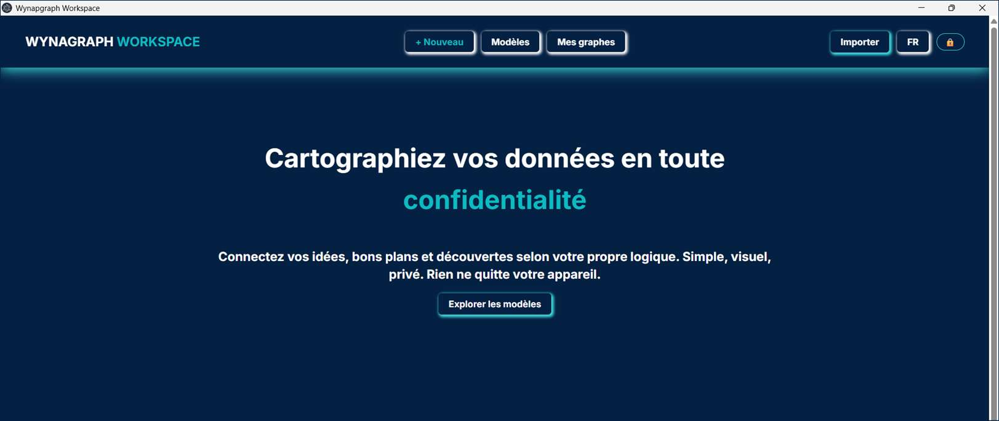
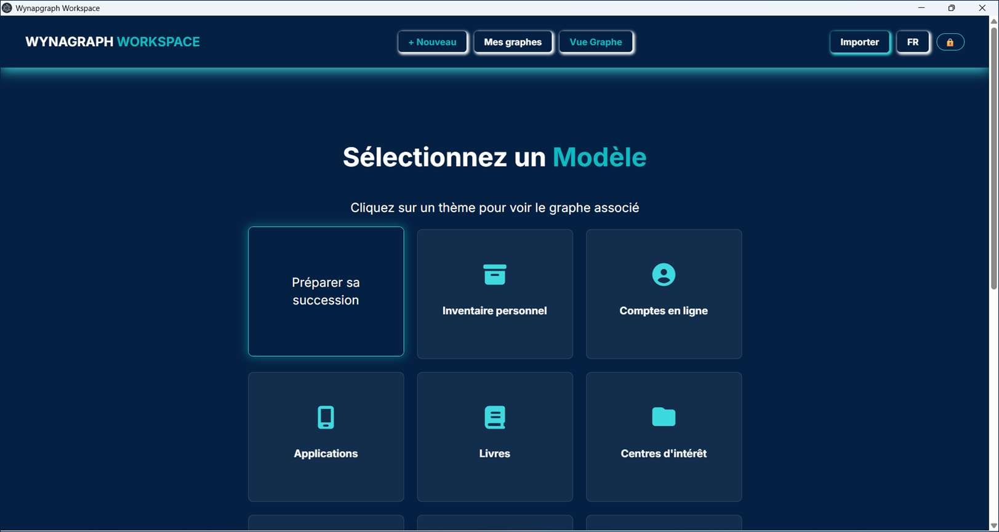
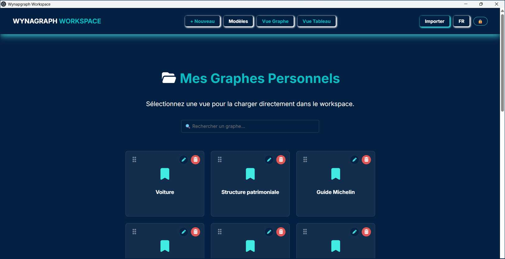
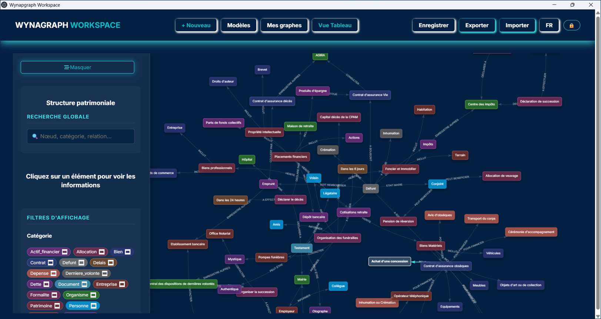
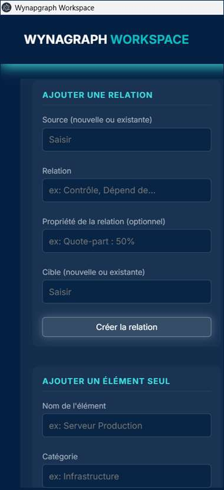
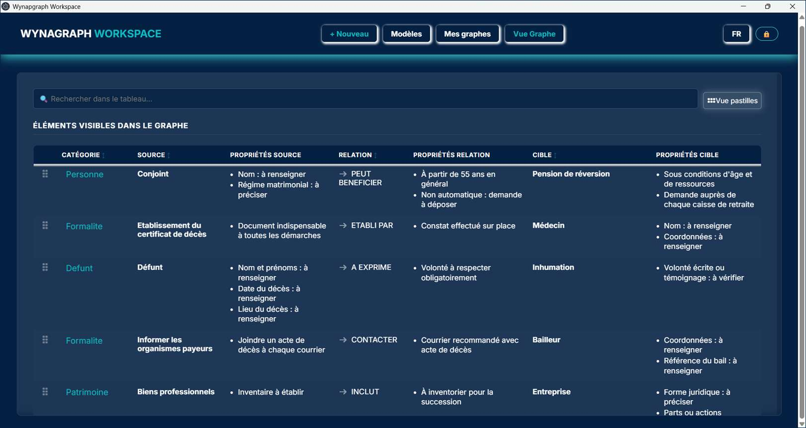
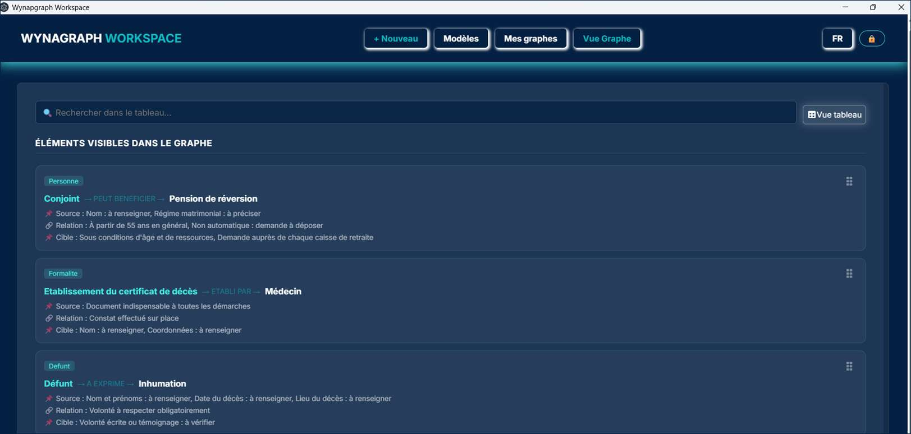
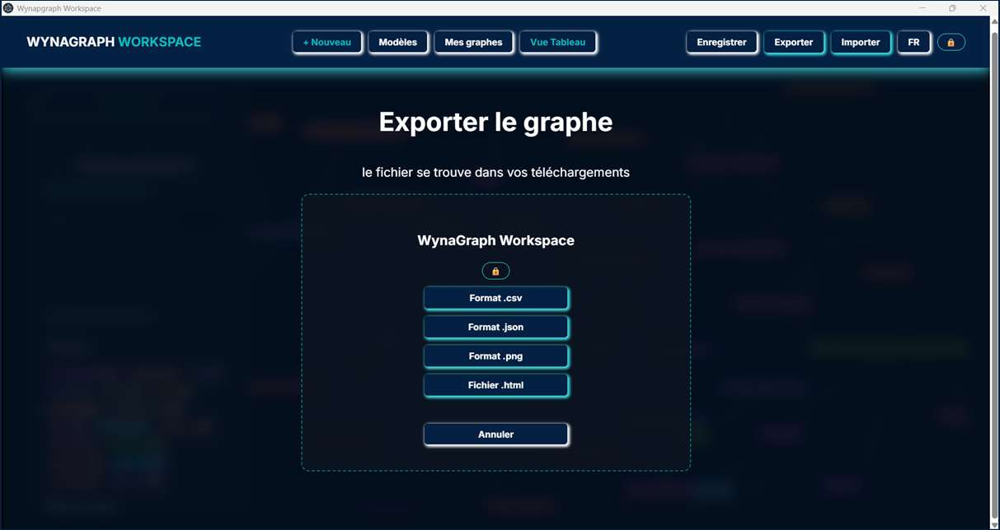
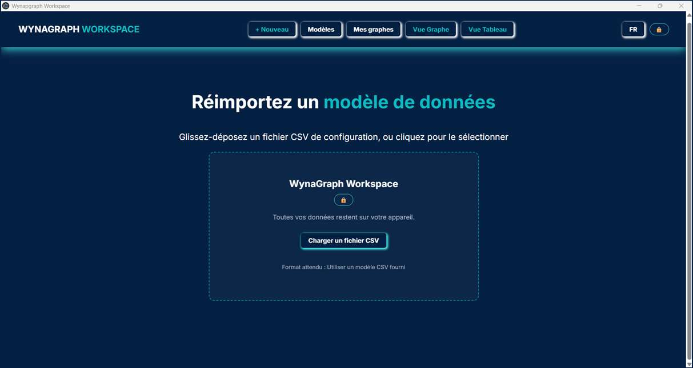

WynaGraph, écran par écran
De l'accueil à l'export de vos données, chaque écran tel qu'il apparaît sur votre poste de travail.

Le message d'ouverture résume l'esprit du logiciel : connecter ses idées selon sa propre logique — simple, visuel, privé.
Interface présentée en français — également disponible en anglais et en allemand.
Démarrer en quelques minutes
Partir d'une trame existante, ou retrouver un graphe commencé.

Des trames prêtes à l'emploi — préparation d'une succession, inventaire personnel, comptes en ligne, applications, livres, centres d'intérêt. Un clic charge le graphe associé, qu'il ne reste qu'à personnaliser.

Chaque graphe enregistré est accessible depuis « Mes graphes personnels » : recherche, renommage, suppression — l'ensemble de vos cartographies réunies au même endroit.
Construire et explorer le graphe
Le cœur de l'application.

Les éléments et leurs relations, colorés par catégorie. Le panneau latéral offre la recherche globale et des filtres d'affichage ; un clic sur un élément en révèle les informations. Ici, le modèle « Structure patrimoniale ».

Ajouter une relation ou un élément
La saisie repose sur un principe simple : une source, une relation, une cible. Chaque relation peut porter ses propres propriétés au même titre que les éléments eux-mêmes.
Les éléments peuvent aussi être créés seuls, avec leur catégorie, puis reliés plus tard : le graphe se construit au rythme de votre réflexion.
Lire les mêmes données sous plusieurs angles
Un même graphe, trois manières de le parcourir.

Le contenu du graphe en lignes et colonnes triables : catégorie, source, relation, cible et leurs propriétés respectives. Idéale pour vérifier, compléter et parcourir les données de manière systématique.

Une lecture fiche par fiche : chaque relation est présentée avec sa source, sa cible et leurs propriétés, dans un format adapté à la relecture attentive d'un dossier.
Vos données restent les vôtres
Quatre formats ouverts, dans les deux sens.

Quatre formats ouverts : CSV, JSON, PNG et HTML. Le fichier est déposé directement dans vos téléchargements. Vos données restent lisibles et réutilisables en dehors de l'application.

Un glisser-déposer suffit pour charger un fichier CSV — depuis un modèle fourni ou l'un de vos exports précédents.
Un cycle complet, entièrement local
De la création à l'export, chaque opération présentée sur cette page s'exécute sur votre poste de travail, sans compte ni connexion. Les formats ouverts (CSV, JSON, HTML) garantissent que vos données restent lisibles et réutilisables à tout moment, y compris en dehors de l'application — un engagement formalisé au contrat de licence (art. 4 du CLUF).